Data visualisation
Alistair Bailey
Learning Objectives
By the end of this lesson the learner will:
- Use geometrical objects and aesthetic mappings to produce time series plots, boxplots and bar charts
- Understand how to use facets to create subplots of data
- Understand how factors and statistical mappings can transform plots
- Understand how to make positional and coordinate adjustments
- Understand how to use themes and to customize plots

Motivation
We’ve transformed the surveys data ready for plotting, but what do we want to plot?
We want to plot the number of captures as a function of quarter in which they took place, whilst comparing both kangeroo rats and granivores, as well as comparing kangroo rat exclosure with plots containing kangeroo rats and granivores.
Such a plot should inform us about the effect of kangeroo rat exclosure on the granivore population. All the work we did to transform the data should make this straight forward as we have a tidy data set i.e. each observation forms a row and each variable forms a column. We have four variables: rodent_type, quarter, plot_type and captures.
Here’s the figure from the paper again:

Figure 1 from Heske et. al., 1994
Reproducing the time series
Let’s remind ourselves of the basic form for creating plots with the ggplot2 package:
ggplot(data = <DATA>) +
<GEOM_FUNCTION(mapping = aes(<MAPPINGS>))>In this form we provide a data frame as an arguement to the ggplot function and then aesthetics (the variables we wish to plot) are mapped to a geometric object such as a line. If we were to plot several geoms() on the same plot, we’d need to map the aesthetics to each geom(), so often it’s more convenient to provide the aesthetics arguement to ggplot() instead, and it will be mapped to all geoms we add to the plot. Only do this if this is what you want.
In our first attempt at plotting the data, our data is by_quarter and we’ll map three aesthetics x = quarter,y = captures,colour = plot_type to two geoms geom_line and geom_point.
ggplot(data = by_quarter,
mapping = aes(x = quarter,y = captures,colour = plot_type)) +
geom_line() +
geom_point()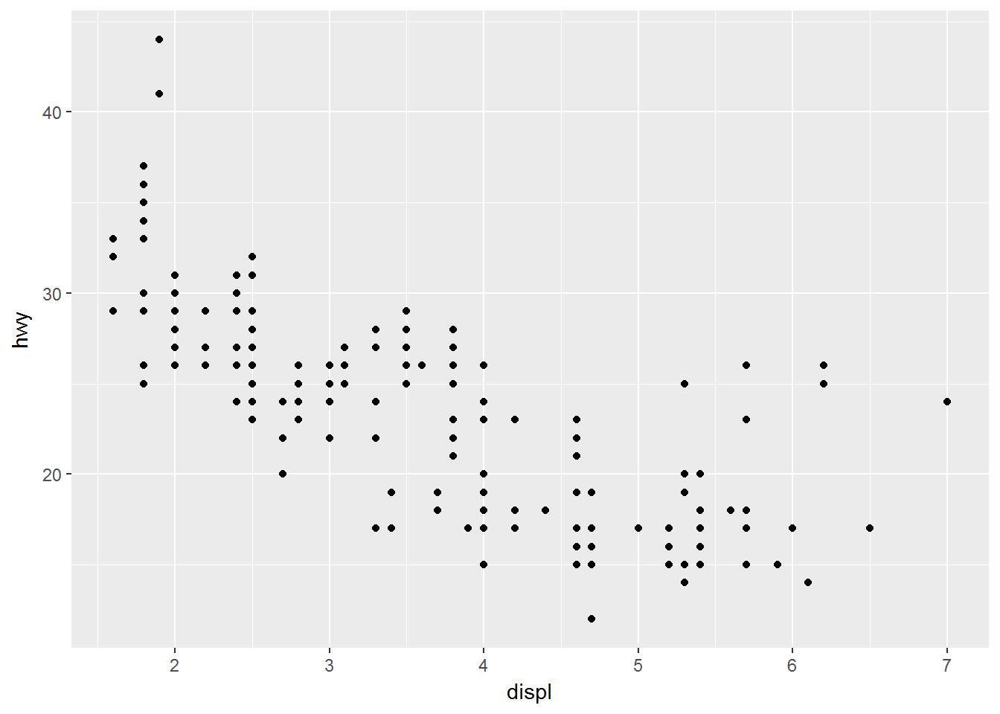
This isn’t much use as we can’t tell the difference between the kangeroo rats and granivores. We need to use our fourth variable rodent_type to create two plots, one for the granivores and the other for the kangeroo rats.
Facets
Creating sub-plots based on the rodent_type variable uses facets. If we are facetting plots by a single variable we use facet_wrap(). The first arguement is ~ followed by the variable name, here rodent_type. This arguement is called a formula. There are many additional arguements that can be provided, see ?facet_wrap.
Using facet_wrap(~ rodent_type) gives us this plot:
ggplot(data = by_quarter,
mapping = aes(x=quarter,y=captures,colour=plot_type)) +
geom_line() +
geom_point() +
facet_wrap(~ rodent_type)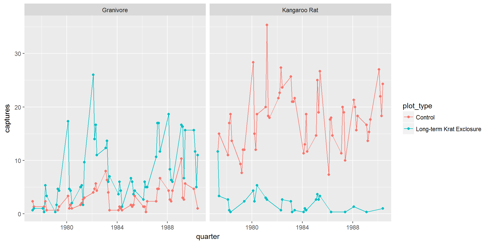
So this is starting to look more like the published figure, and we can confirm that the granivore populations do increase when the kangeroo rats are excluded.
However we can improve things, and we’ll come back making the figure more polished at the end of this lesson.
If we wanted to plot the combination of two variable we’d use facet_grid() in which the formula becomes first_variable ~ second_variable.
Challenge
Try plotting
by_quarterusingfacet_grid()and arguementsplot_typeandrodent_typeWe don’t need to map the colour aesthetic.
ggplot(data = by_quarter,
mapping = aes(x=quarter,y=captures)) +
geom_line() +
geom_point() +
facet_grid(plot_type~ rodent_type)Other plot types
There are many other types of plot we may wish to create when exploring data. The previous plot showed us changes with time, but we might want to look at averages and spread or other statistical summaries of the data.
Boxplots
ggplot(data= by_quarter,
mapping = aes(x = rodent_type, y = captures,
colour = rodent_type)) +
geom_boxplot() +
facet_wrap(~ plot_type)
Position adjustments
# Without jitter
ggplot(data = mpg) + geom_point(mapping = aes(x=displ, y=hwy,
colour=class))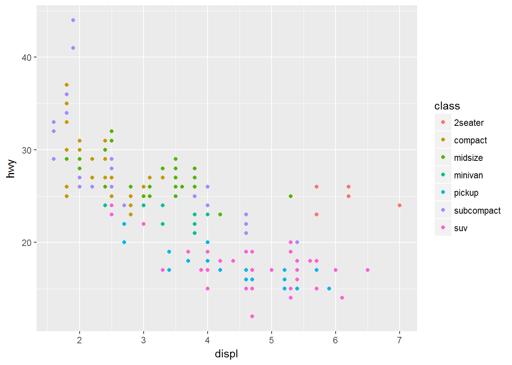
# With jitter
ggplot(data = mpg) + geom_point(mapping = aes(x=displ, y=hwy,
colour=class),position = "jitter")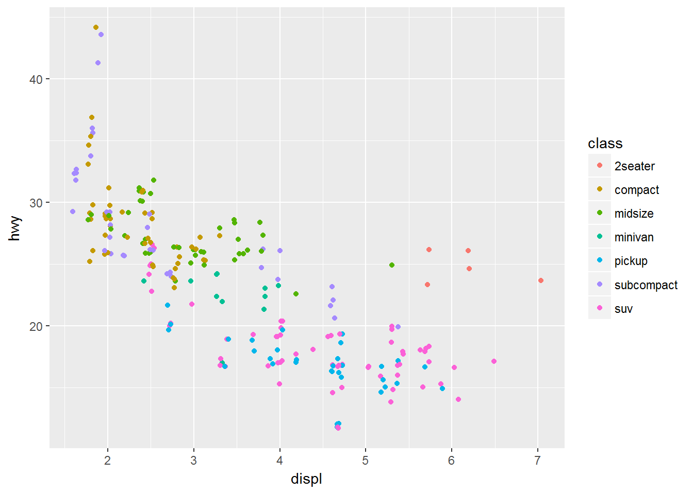
# Boxplot without jitter
ggplot(data= by_quarter,
mapping = aes(x = rodent_type, y = captures,
colour = rodent_type)) +
geom_boxplot() +
geom_point() +
facet_wrap(~ plot_type)
# Boxplot with jitter
ggplot(data= by_quarter,
mapping = aes(x = rodent_type, y = captures,
colour = rodent_type)) +
geom_boxplot() +
geom_point(position = "jitter") +
facet_wrap(~ plot_type)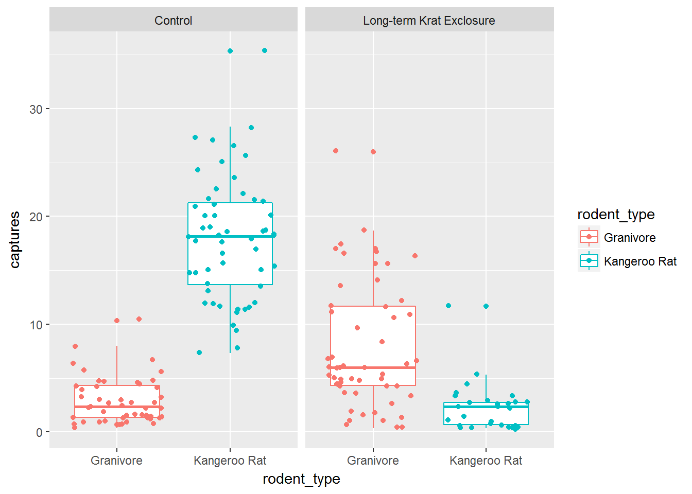
Bar charts
 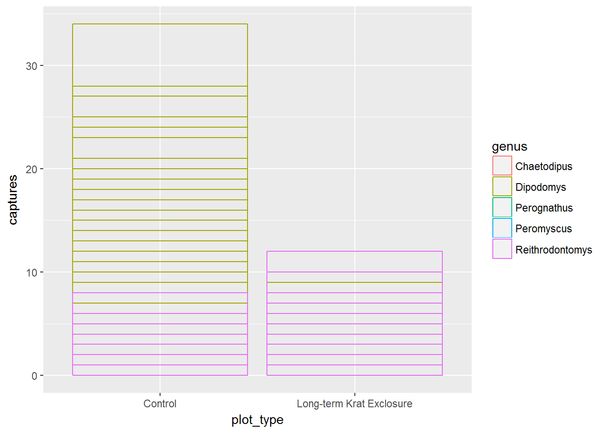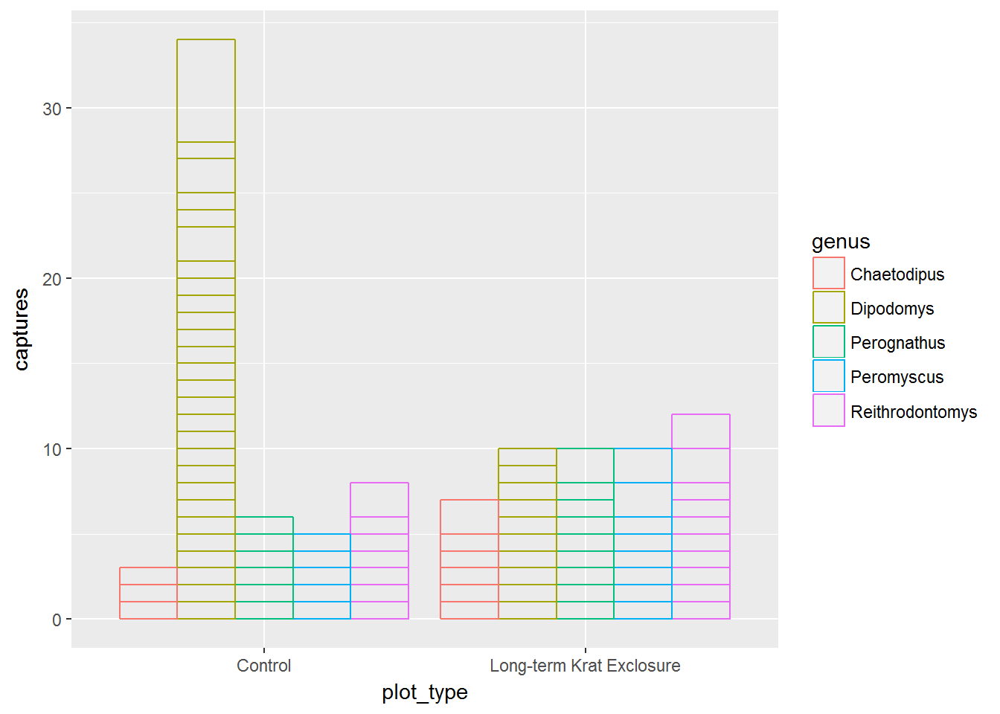
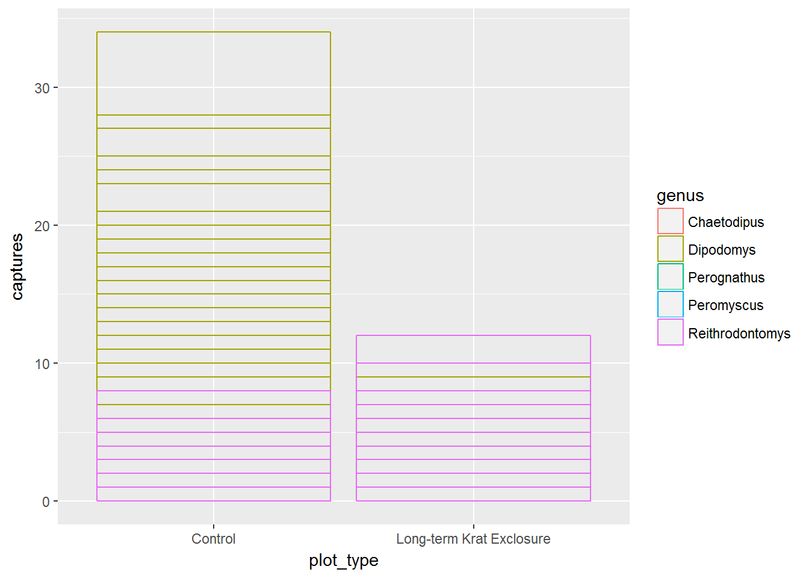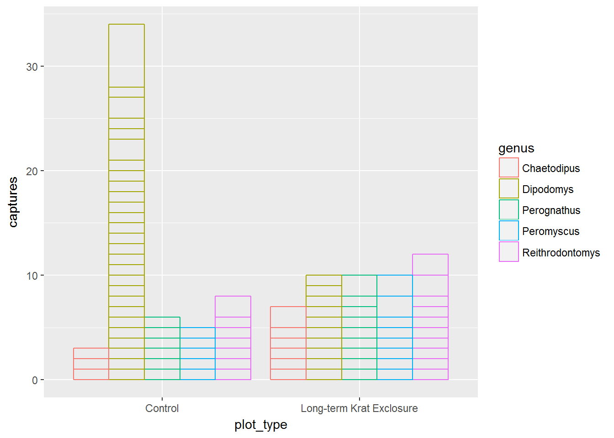
Statistical transformations

Coordinate adjustments
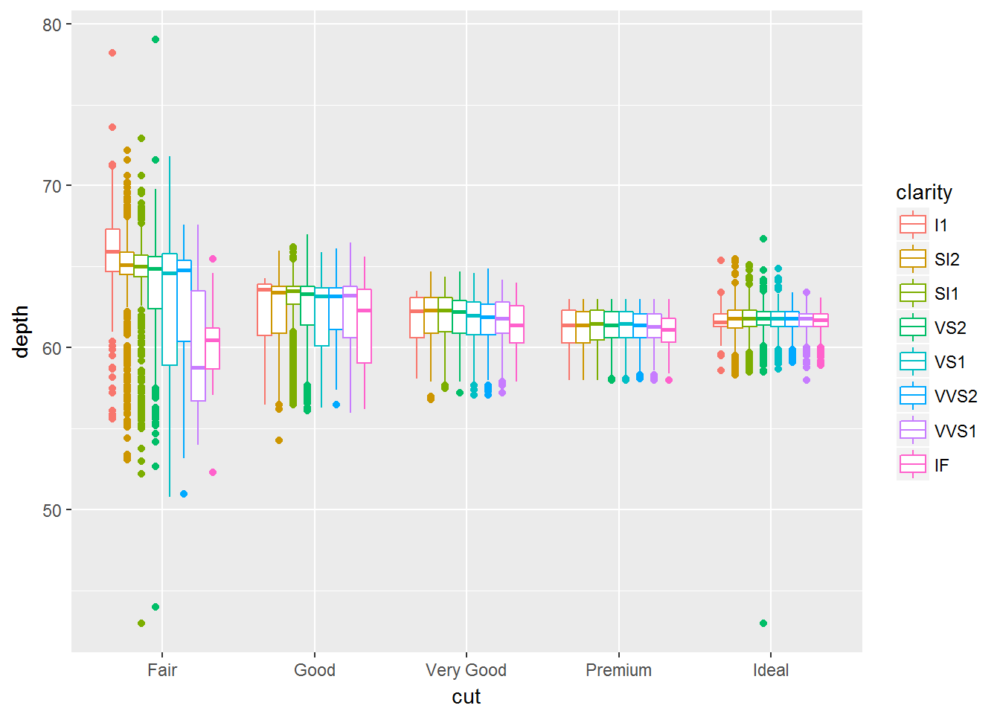
Factors

Themes and customisations
ggplot(data= by_quarter,
mapping = aes(x = rodent_type, y = captures,
colour = rodent_type)) +
geom_boxplot() +
scale_colour_brewer(palette = "Set1") +
geom_point(position = "jitter") +
facet_wrap(~ plot_type) +
xlab("Rodent type") +
ylab("Number of captures") +
ggtitle("Quarterly captures of rodents between 1977 and 1990") +
theme_bw()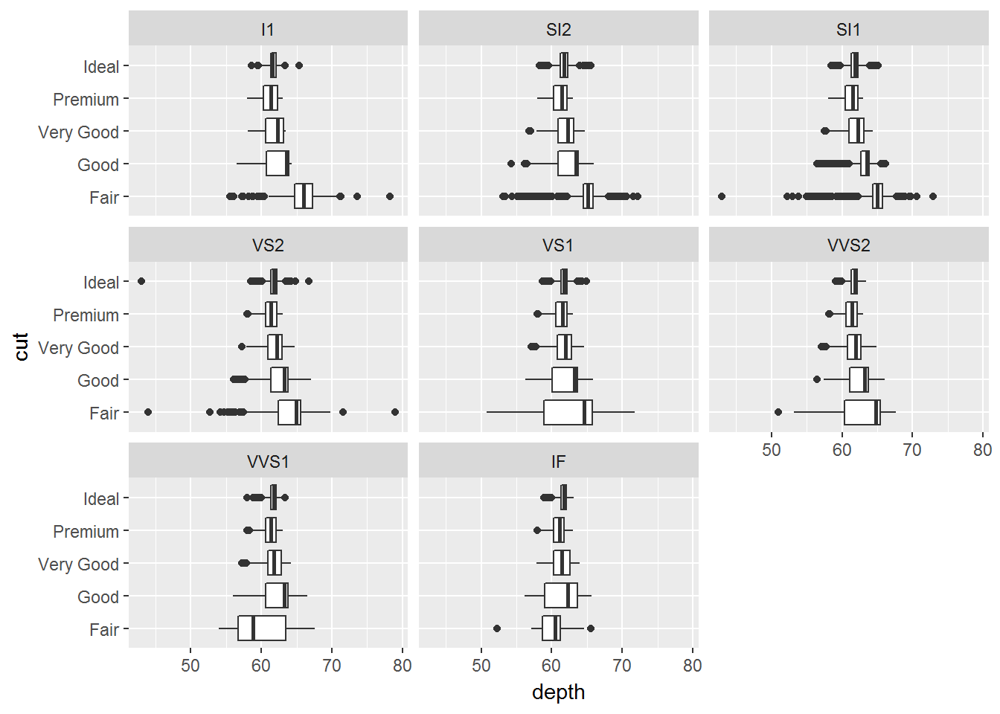
# Create rodent levels by getting the unique values for rodent type
# and putting them in reverse order for plotting
rodent_levels <- rev(unique(by_quarter$rodent_type))
# Convert rodent_type to factors such that Kangeroo rat is first and Granivore
# is second
by_quarter$rodent_type <- factor(by_quarter$rodent_type,
levels = rodent_levels)
# Now recreate the published figure in black and white
ggplot(data = by_quarter,aes(x=quarter,y=captures,
linetype=plot_type,shape=plot_type)) +
geom_line() +
geom_point() +
facet_wrap(~ rodent_type, nrow = 2) +
scale_x_continuous(breaks = seq(1978,1990,2)) +
scale_linetype_discrete(guide_legend(title = "")) +
scale_shape_discrete(guide_legend(title = "")) +
xlab("YEAR") +
ylab("CAPTURES / PERIOD") +
theme_linedraw() +
theme(axis.text = element_text(size = 12, face = "bold"),
axis.title = element_text(size = 12, face = "bold"),
strip.text = element_text(size=12),
panel.grid = element_blank(),
aspect.ratio = 0.6,
legend.position = "top")
Figure 1 from Heske et. al., 1994
Summary
ggplot(data = <DATA>) +
<GEOM_FUNCTION>(
mapping = aes(<MAPPINGS>),
stat = <STAT>,
position = <POSITION>
) +
<COORDINATE_FUNCTION> +
<FACET_FUNCTION>Data Carpentry, 2017.
License. Questions? Feedback?
Please file
an issue on GitHub.
On Twitter: @datacarpentry